Practical phylogenetic methods for linguistic typology
Erich Round
2022-10-10

Introduction
A perennial task in typology is the characterization of frequencies of traits of interest among the world’s languages. The scientific interest of such questions typically lies not merely in the contingent facts of today’s particular languages and language families, rather the goal is to characterize the nature of human language in general, using today’s contingent empirical data as evidence. One of the key challenges that makes this task difficult to carry out in a principled way is that languages are historically related to each other. This document is a practical introduction to the use of phylogenetic comparative methods, which will help to meet this challenge in a principled way.
Preparation and session set up
This tutorial is based on R. If you have not installed R or are new to it, you will find an introduction to and more information how to use R here. For this tutorials, we need to install certain packages from an R library so that the scripts shown below are executed without errors. Before turning to the code in subsequent sections, please first install the packages by running the code below this paragraph. If you have already installed the packages mentioned below, then you can skip ahead and ignore this section. To install the necessary packages, simply run the following code - it may take some time (between 1 and 5 minutes to install all of the libraries so you do not need to worry if it takes some time).
# set options
options(stringsAsFactors = F) # no automatic data transformation
options("scipen" = 100, "digits" = 4) # suppress math annotation
# install packages
install.packages("tidyverse")
install.packages("flextable")
install.packages("devtools")
install.packages("phangorn")
# install klippy for copy-to-clipboard button in code chunks
devtools::install_github("rlesur/klippy")
devtools::install_github("erichround/phyloWeights",
dependencies = T,
INSTALL_opts = c("--no-multiarch"))
devtools::install_github("erichround/glottoTrees",
dependencies = T,
INSTALL_opts = c("--no-multiarch"))Next, we activate the packages.
# activate packages
library(tidyverse)
library(flextable)
library(phyloWeights)
library(glottoTrees)
library(ape)
# activate klippy for copy-to-clipboard button
klippy::klippy()Once you have installed R, RStudio, and have also initiated the session by executing the code shown above, you are good to go.
An intuitive introduction to the challenge of genealogy
To get an intuitive notion of the challenge that is presented by the genealogical relatedness of languages, consider the small language family pictured in the figure below. It contains four languages, which are either SOV or SVO. The question is: What proportion of this family is SOV? Should you just count the languages, in which case the answer is literally 75%? This answer may seem not quite right, because now one half of the family is counting three times as much as the other half, just because it had the fortune of containing more languages. Put another way, the figure of 75% is strongly influenced by contingencies of history.
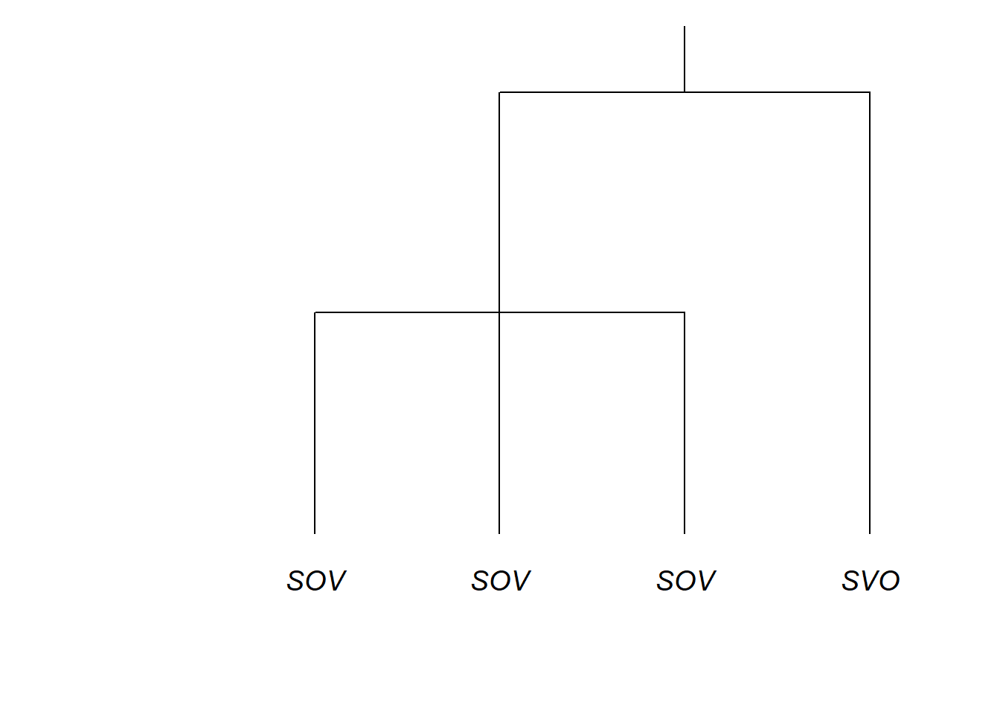
In a LADAL seminar on 4 November, 2021 (Macklin-Cordes and Round 2021b) and in a related journal article (Macklin-Cordes and Round 2021a), Jayden Macklin-Cordes and I review some of history of thinking in linguists’ attempts to account for historical relatedness of exactly this kind when comparing across languages. We also explain how phylogenetic comparative methods present the most principled response to it developed so far. We recommend reviewing either of these sources, since they cover the scientific content which corresponds to the practical, technical content in this tutorial. Here, we will not review the scientific content at any length.
This document provides a guide to the practical use of phylogenetic comparative methods for linguistic typology, specifically, the calculation of genealogically-sensitive proportions and averages. These are methods which provide an answer to the question: “When characterising the frequencies of traits among the world’s languages, how can we take genealogy into account?” Here we cover two methods for calculating genealogically-sensitive proportions and averages: the ‘ACL’ method (Altschul, Carroll, and Lipman 1989) and the ‘BM’ method (Stone and Sidow 2007).
Because a key part of this kind of analysis is the preparation of a phylogenetic tree, an important component of the tutorial will be about how such trees can be prepared.
The tutorial is divided into four main sections. Section Trees in R is an introduction to how trees are represented in R. Section Genealogically-sensitive averages and proportions discusses the calculation of genealogically-sensitive proportions and averages. Section Using and adapting trees from glottolog.com explains how typologists can prepare phylogenetic trees by adapting resources freely available from glottolog.com (Hammarström et al. 2021). And Section Putting it together: A worked example provides a worked example used in a typological investigation of sonority sequencing by Yin (2020).
Much of the discussion below is an introduction to the functionality of two R packages, glottoTrees (E. R. Round 2021a) and phyloWeights (E. R. Round 2021b), which have been specifically written for these tasks. The text of this tutorial is taken largely from the Supplementary Materials section S1 of Macklin-Cordes and Round (2021a).
1 Trees in R
This section discusses how trees are created, manipulated and plotted in R. Terminology we will use includes: tips at the ends of trees, which in a linguistic tree would usually be the languages or lects; the branches of a tree; the interior nodes or just nodes of a tree, where branches join together; and the root of the tree, its deepest node. R will represent trees as complex objects, in which the tips, nodes and branches all appear, along with labels for the tips and nodes.
One of the simplest methods of constructing a tree in R begins with a description of the tree using a form a bracketing notation known as the Newick standard (Felsenstein, n.d.). In its simplest form, a tree is represented in Newick format by a set of tip labels grouped by parentheses, separated by commas, and ending with a semicolon. For example, here is a string that represents a tree with four tips, A, B, C and D, which we assign to the object my_newick:
my_newick <- "(((A,B),C),D);"A Newick-formatted string can then be converted to a tree object by supplying it as the text argument of the function read.tree(), from the ape package:
my_tree <- read.tree(text = my_newick)We can plot the tree using the plot() function:
plot(my_tree)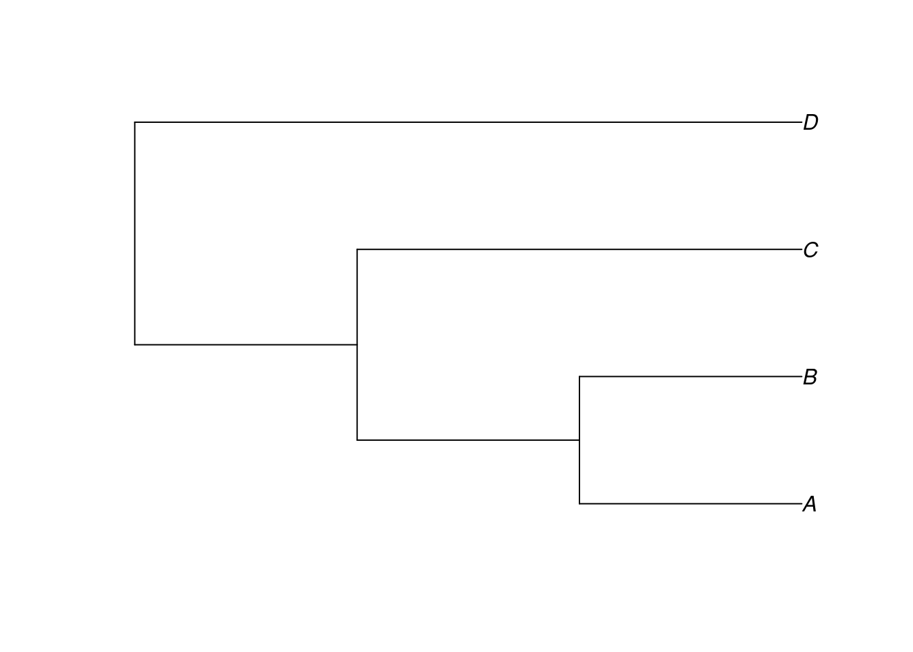
By default, trees in R are plotted horizontally following the convention in biology. The glottoTrees package provides a function plot_glotto() which plots trees in a more typical, downward-running linguistic format, as below.
plot_glotto(my_tree)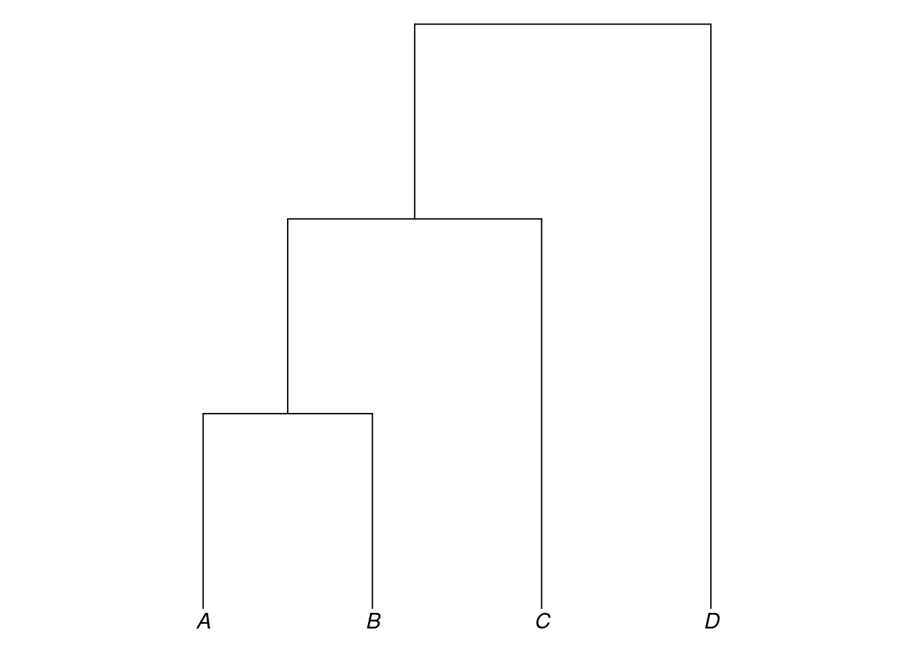
The tree object my_tree which we defined above did not include information about branch lengths. In Newick format, branch lengths are written with a preceding colon and appear directly after a language or the closing bracket for a subgroup:
my_newick2 <- "(((A:4,B:4):1,C:5):3,D:8);"Converting this to a tree object and plotting it:
my_tree2 <- read.tree(text = my_newick2)
plot_glotto(my_tree2)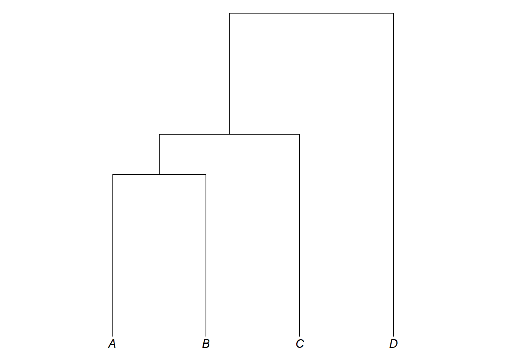
Trees can have labels not only for their tips, but also for their internal nodes. In linguistics, an internal node of a tree may be interpreted taxonomically, as representing a subgroup and labeled accordingly, or genealogically, as a proto-language from which the subgroup descends and labeled accordingly. In Newick format, labels for internal nodes are placed directly after a closing parenthesis. For example, here we add labels that reflect a genealogical interpretation of the nodes:
my_newick3 <- "(((A:4,B:4)proto-AB:1,C:5)proto-ABC:3,D:8)proto-ABCD;"
my_tree3 <- read.tree(text = my_newick3)
plot_glotto(my_tree3)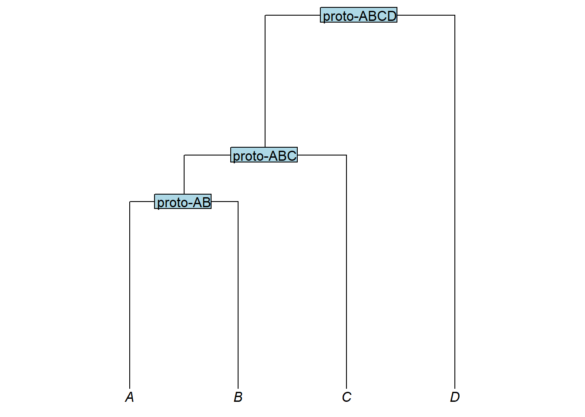
Technically speaking, trees are represented by R as objects with a customised class called phylo.
class(my_tree3)## [1] "phylo"A phylo object stores information about the tree topology (i.e., its branching structure), the branch lengths, and the labels of the tips and nodes. In R we often use the $ operator to access one object that is contained inside another. For instance, the object y contained within the larger object x would be referred to as x$y. Here are some examples:
my_tree3$edge.length## [1] 3 1 4 4 5 8my_tree3$tip.label## [1] "A" "B" "C" "D"my_tree3$node.label## [1] "proto-ABCD" "proto-ABC" "proto-AB"Another object class in R, related to the phylo class, is the multiPhylo class. Objects of the multiPhylo class are used to store multiple phylo trees in a single, larger object.
newick_a <- "(((A:4,B:4):1,C:5):3,D:8);"
newick_b <- "((A:2,B:2):1,(C:1,D:1,E:1):2);"
tree_a <- read.tree(text = newick_a)
tree_b <- read.tree(text = newick_b)
my_multiPhylo <- c(tree_a, tree_b)
class(my_multiPhylo)## [1] "multiPhylo"For reasons we won’t go into here, the phylo trees inside a multiPhylo object are not accessed using the $ operator but using double square brackets. For example, here we refer to the second tree inside the object my_multiPhylo by writing my_multiPhylo[[2]]:
plot_glotto(my_multiPhylo[[2]])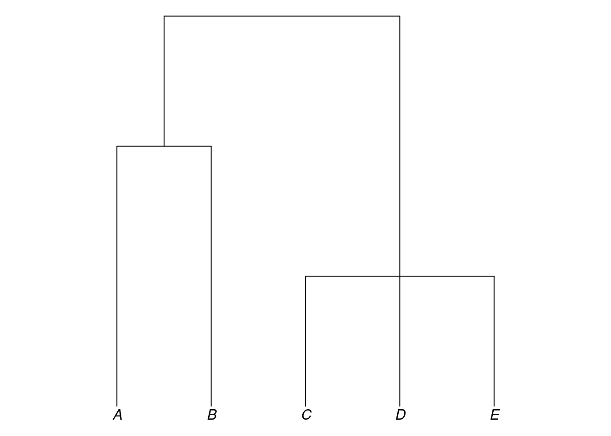
Before concluding this section, a final word is in order about the irrelevance of the left-to-right arrangement of trees. In a tree, there is no meaningful difference between (A,B) and (B,A): in both, A and B are sisters under a shared parent node. Similarly, these are all equivalent: (A,B,C), (A,C,B), (B,A,C), (B,C,A), (C,A,B) and (C,B,A). And likewise, these are all equivalent: (A,(B,C)), (A,(C,B)), ((B,C),A) and ((C,B),A).
2 Genealogically-sensitive averages and proportions
We now turn to the calculation of genealogically-sensitive proportions and averages. To begin, consider these six trees, which represent six different hypotheses about the genealogical relationships between languages A, B, C and D. Also plotted here are the languages’ dominant word orders and their numbers of consonant phonemes.
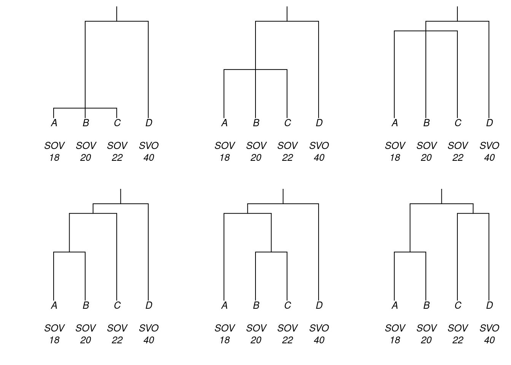
Questions that we seek to answer are: what is the proportion of this set of languages that is SOV?; and what is the average number of consonant phonemes in this set of languages? Moreover, we want the answers to be sensitive to genealogy, and we’re interested in how the answers may vary according to which of these six genealogical hypotheses is adopted.
Calculating genealogically-sensitive averages and proportions will require two key components:
- A
phyloormultiPhyloobject containing one or more trees. - A dataframe, which (i) contains the typological data to be averaged and (ii) relates that data to the tips of the trees.
The phylo or multiPhylo object can be manually defined, as described in Section Trees in R, can be read from a file,1 or it can be constructed by using and adjusting materials freely available from glottolog.com, as described below in Section Using and adapting trees from glottolog.com. In this example, our six trees can be manually defined using the code below, which places them inside a single multiPhylo object named multi_phylo_ABCD:
multiPhylo_ABCD <-
c(read.tree(text = "(((A:0.2,B:0.2,C:0.2):1.8,D:2):0.3);"),
read.tree(text = "(((A:1,B:1,C:1):1,D:2):0.3);"),
read.tree(text = "(((A:1.8,B:1.8,C:1.8):0.2,D:2):0.3);"),
read.tree(text = "((((A:1,B:1):0.8,C:1.8):0.2,D:2):0.3);"),
read.tree(text = "(((A:1.8,(B:1,C:1):0.8):0.2,D:2):0.3);"),
read.tree(text = "(((A:1,B:1):1,(C:1.8,D:1.8):0.2):0.3);")
)The dataframe can be manually defined or be read from a file. Perhaps the easiest method is to read from a file that you have created and saved in “CSV” (comma separated value) format. CSV files can be created in commercial spreadsheet software like Excel, and then read by R using the read.csv() function like this:
my_dataframe <- read.csv("my_csv_file.csv")The dataframe must contain one column named tip (note that in R, names of columns and other objects are case sensitive) plus at least one column containing numerical data. The contents of the tip column must be the same as the tip labels of the tree(s) in the phylo or multiPhylo object. The contents of the numerical columns will depend on whether a proportion or an average is desired. To calculate a proportion, fill a numerical column with 1 if the language possesses the property and 0 if it does not. To calculate an average, fill a numerical column with the values of the variable for each language.
For this example, the dataframe required is defined in the code below. In addition to the tip column, it contains two numerical columns, is_SOV and n_consonants. As good housekeeping, we recommend using column names of the form is_X or has_X for columns that contain data for proportions, and names of the form n_X for columns that contain counts to be averaged.
data_ABCD <- data.frame(tip = c("A", "B", "C", "D"),
is_SOV = c(1, 1, 1, 0),
n_consonants = c(18, 20, 22, 40),
stringsAsFactors = FALSE)Genealogically-sensitive averages and proportions are obtained using the phyloWeights function phylo_average(), specifying its arguments phy and data as in the example below. Here we have assigned the output of this function to a new object results_ABCD. We recommend always assigning the output of phylo_average() to an object. We will see below how to extract from it the various parts of the results.
results_ABCD <- phylo_average(phy = multiPhylo_ABCD, data = data_ABCD)The function phylo_average() may take up to several minutes to run if the tree is large, or many trees are provided. It will return error messages if the inputs provided to it are not what is required.
The results object will contain several parts, which can be accessed using the $ operator. In $phy will be the tree(s) that were supplied and in $data will be the dataframe that was supplied, e.g.:
results_ABCD$data## tip is_SOV n_consonants
## 1 A 1 18
## 2 B 1 20
## 3 C 1 22
## 4 D 0 40In $ACL_averages is a dataframe containing the genealogically-sensitive averages/proportions according to the ACL method. The dataframe has one row per tree and one column for each of the numerical columns in the data dataframe. Here you can see how the answer to our questions changes as the hypotheses about the tree changes.
results_ABCD$ACL_averages## tree is_SOV n_consonants
## 1 tree1 0.5172414 29.65517
## 2 tree2 0.6000000 28.00000
## 3 tree3 0.7142857 25.71429
## 4 tree4 0.6768559 26.63755
## 5 tree5 0.6768559 26.28821
## 6 tree6 0.7115385 25.92308In $BM_averages appear the genealogically-sensitive averages or proportions obtained using the BM method:
results_ABCD$BM_averages## tree is_SOV n_consonants
## 1 tree1 0.5568599 28.86280
## 2 tree2 0.6952381 26.09524
## 3 tree3 0.7468354 25.06329
## 4 tree4 0.7256904 25.56443
## 5 tree5 0.7256904 25.40796
## 6 tree6 0.7288732 25.50704In terms of their inner workings, both methods work by assigning weights to languages, and those weights then reflect how much each language contributes to the final result. These weights can be found in $ACL_weights and $BM_weights. You might like to compare, for each tree, the weights for languages A, B, C, D with the positions of the languages in the tree, in order to get an idea of how the weights relate to the tree shape.
results_ABCD$ACL_weights## tip tree1 tree2 tree3 tree4 tree5 tree6
## 1 A 0.1724138 0.2 0.2380952 0.1965066 0.2838428 0.2115385
## 2 B 0.1724138 0.2 0.2380952 0.1965066 0.1965066 0.2115385
## 3 C 0.1724138 0.2 0.2380952 0.2838428 0.1965066 0.2884615
## 4 D 0.4827586 0.4 0.2857143 0.3231441 0.3231441 0.2884615results_ABCD$BM_weights## tip tree1 tree2 tree3 tree4 tree5 tree6
## 1 A 0.1856200 0.2317460 0.2489451 0.2288579 0.2679747 0.2288732
## 2 B 0.1856200 0.2317460 0.2489451 0.2288579 0.2288579 0.2288732
## 3 C 0.1856200 0.2317460 0.2489451 0.2679747 0.2288579 0.2711268
## 4 D 0.4431401 0.3047619 0.2531646 0.2743096 0.2743096 0.2711268It is possible to save any of these dataframes to a file using the write.csv() function, for example:
write.csv(results_ABCD$ACL_averages, file = "my_ACL_averages.csv")3 Using and adapting trees from glottolog.com
As we have seen, using phylogenetic comparative methods, such as methods for calculating genealogically-sensitive averages, requires us to have one or more trees, expressing hypotheses about genealogical relationships among the languages. In this section we address the questions, where can linguists obtain their trees from?; and how can linguists adapt those trees to reflect their own hypotheses about language relatedness?
Our starting point is glottolog.com (Hammarström et al. 2021), a major online publication which contains many useful resources for quantitative typology. The R package glottoTrees (E. R. Round 2021a) has been written to help linguists make the most of these resources, including by modifying them as they desire. This section covers the glottolog data itself and the functionality of glottoTrees. We introduce glottolog’s genealogical data in Section Glottolog’s genealogical data, discussing how to locate metadata about languages and families of interest, and how to view glottolog’s linguistic family trees. Since genealogically-sensitive averages and proportions require all of the languages in the study to be linked in a tree, we then discuss how glottolog’s individual trees can be combined into larger, composite trees in Section @ref(combining-trees). Since typological studies will often examine language varieties at a level of granularity that differs from glottolog’s own, in Section How to modify trees we discuss how to add and remove languages from trees. In Section How to add branch lengths we discuss how to add branch lengths to trees, since branch lengths are necessary for the calculation of genealogically-sensitive averages and proportions. Section @ref(exporting) discusses how to export trees for use with other software.
3.1 Glottolog’s genealogical data
Glottolog provides metadata about the world’s language varieties, their division into language families and the hierarchical subgrouping of languages inside those families. Naturally, there are many points of contention in linguistics about what the world’s stock of languages and dialects actually is, how it groups into families, and how the families themselves are subgrouped. Glottolog provides one set of answers, and structures them in a way which provides typologists with a basis for carrying out changes to suit their own hypotheses. In later sections we will see how this can be done. In this section we describe glottolog’s own global linguistic metadata.
At time of writing, the current version of glottolog is v4.4. The glottoTrees package contains a copy of the v4.4 metadata covering language names, language identification codes, family names, geographical groupings, and family trees. The original metadata files that contain this information are currently available at https://glottolog.org/meta/downloads, where a file named tree_glottolog_newick.txt2 contains glottolog’s trees, and languages_and_dialects_geo.csv provides geographical metadata.
Language metadata can be accessed using the glottoTrees function get_glottolog_languages(). This function returns a dataframe of close to twenty-six thousand rows. To view it in full, we suggest saving it to a CSV file and opening it in spreadsheet software such as Excel:
language_metadata <- get_glottolog_languages()
write.csv(language_metadata, "language_metadata.csv")Here are the first ten rows:
language_metadata <- get_glottolog_languages()
head(language_metadata, n = 10)## glottocode isocodes name name_in_tree position tree
## 1 3adt1234 3Ad-Tekles 3Ad-Tekles tip 391
## 2 aala1237 Aalawa Aalawa tip 94
## 3 aant1238 Aantantara Aantantara tip 90
## 4 aari1238 <NA> <NA> Aari-Gayil node 22
## 5 aari1239 aiw Aari Aari tip 22
## 6 aari1240 aay Aariya Aariya <NA> NA
## 7 aasa1238 aas Aasax Aasax tip 391
## 8 aasd1234 Aasdring Aasdring tip 269
## 9 aata1238 Aatasaara Aatasaara tip 90
## 10 abaa1238 Rngaba Rngaba tip 345
## tree_name
## 1 Afro-Asiatic
## 2 Austronesian
## 3 NuclearTransNewGuinea
## 4 SouthOmotic
## 5 SouthOmotic
## 6 <NA>
## 7 Afro-Asiatic
## 8 Indo-European
## 9 NuclearTransNewGuinea
## 10 Sino-TibetanListed here are glottolog’s languages, dialects, subgroups and families. These entities are identified by a name, an ISO-639-3 code if available (format: three letters) and a glottolog-specific glottocode (format: four letters followed by four digits3). Also described is the entity’s relationship to a glottolog tree: the representation of its name in the tree (which may differ slightly from the name used elsewhere by glottolog4), its position (as tip or node), and the tree’s number and name.
By default, the metadata functions in glottoTrees, such as get_glottolog_languages(), will return information about the most recent version of glottolog which the package contains. To access older versions, supply the version number via the glottolog_version argument:5
language_metadata_v4.3 <- get_glottolog_languages(glottolog_version = "4.3")
head(language_metadata_v4.3, n = 10)## glottocode isocodes name name_in_tree position tree
## 1 3adt1234 3Ad-Tekles 3Ad-Tekles tip 186
## 2 aala1237 Aalawa Aalawa tip 205
## 3 aant1238 Aantantara Aantantara tip 145
## 4 aari1238 <NA> <NA> Aari-Gayil node 85
## 5 aari1239 aiw Aari Aari tip 85
## 6 aari1240 aay Aariya Aariya <NA> NA
## 7 aasa1238 aas Aasax Aasax tip 186
## 8 aasd1234 Aasdring Aasdring tip 179
## 9 aata1238 Aatasaara Aatasaara tip 145
## 10 abaa1238 Rngaba Rngaba tip 329
## tree_name
## 1 Afro-Asiatic
## 2 Austronesian
## 3 NuclearTransNewGuinea
## 4 SouthOmotic
## 5 SouthOmotic
## 6 <NA>
## 7 Afro-Asiatic
## 8 Indo-European
## 9 NuclearTransNewGuinea
## 10 Sino-TibetanBriefer metadata about glottolog’s language families can be accessed using the glottoTrees function get_glottolog_families(). This returns a dataframe of 420 rows, so to view it in full, we also suggest saving it to a CSV file and opening it in spreadsheet software. Here are the first ten rows:
family_metadata <- get_glottolog_families()
head(family_metadata, n = 10)## tree tree_name n_tips n_nodes main_macroarea
## 1 1 Yam 33 18 Papunesia
## 2 2 Mongolic-Khitan 66 25 Eurasia
## 3 3 Kol{PapuaNewGuinea} 2 1 Papunesia
## 4 4 Namla-Tofanma 2 1 Papunesia
## 5 5 Tanahmerah 1 1 Papunesia
## 6 6 Jarawa-Onge 2 1 Eurasia
## 7 7 Ta-Ne-Omotic 29 15 Africa
## 8 8 Pomoan 10 7 North America
## 9 9 WesternDaly 14 7 Australia
## 10 10 Yangmanic 3 1 AustraliaGlottolog v4.4 divides the world’s languages into 420 families, including 138 isolates, and it provides a tree for each. Together, the 420 trees contain 8,209 internal nodes and 17,008 tips, many of which represent varieties that would typically be considered dialects. Geographically, glottolog assigns each language variety to one of six macroareas: Africa, Australia, Eurasia, Papunesia, South America or North America. The glottoTrees metadata includes a column main_macroarea. This is the one macroarea which contains more of the family’s language varieties than any other. We will see how this information can be useful in Section @ref(combining-trees).
Glottolog’s 420 family trees are stored in a multiPhylo object named glottolog_trees_v4.4. For example, here is glottolog’s representation of the Great Andamanese family, which is tree 340 within the object glottolog_trees_v4.4. For readability, we plot this tree horizontally:
tree_GA <- glottolog_trees_v4.4[[340]]
plot(tree_GA, x.lim = c(-0.3, 14))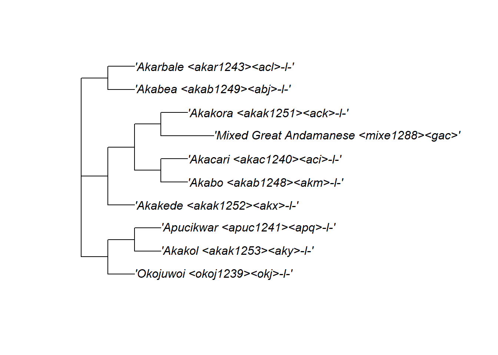
Just above, we obtained the tree for Great Andamanese by referring to its tree number (340) in the glottolog_trees_v4.4 object. The package glottoTrees also provides a function get_glottolog_trees() which enables trees to be obtained using the glottolog name for their families, for instance:
tree_GA <- get_glottolog_trees("GreatAndamanese")
plot(tree_GA, x.lim = c(-0.3, 14))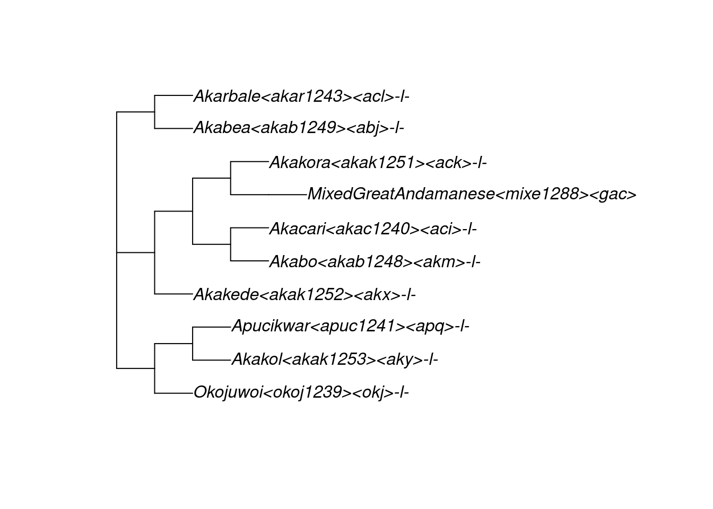
If you know the name of one or more families and would like to now the number of their trees, use which_tree():
which_tree("GreatAndamanese")## GreatAndamanese
## 340which_tree(c("Turkic", "Tupian", "Tuu"))## Turkic Tupian Tuu
## 217 32 76Both get_glottolog_trees() and which_tree() allow the usage of a glottolog_version argument, to refer to older versions of glottolog. For instance, here are the tree numbers of the same families in version 4.1:
which_tree("GreatAndamanese", glottolog_version = "4.1")## GreatAndamanese
## 6which_tree(c("Turkic", "Tupian", "Tuu"), glottolog_version = "4.1")## Turkic Tupian Tuu
## 66 297 80In glottolog’s trees, the tip labels are rather long, consisting of a name followed by a glottocode in angled brackets, an ISO code in angled brackets (if one exists) and possibly the string “-l-”. Node labels (not shown in the tree above) have the same structure. The glottoTrees function abridge_labels() will shorten labels to just the glottocode, for example:
tree_GA_abr <- abridge_labels(tree_GA)
plot_glotto(tree_GA_abr)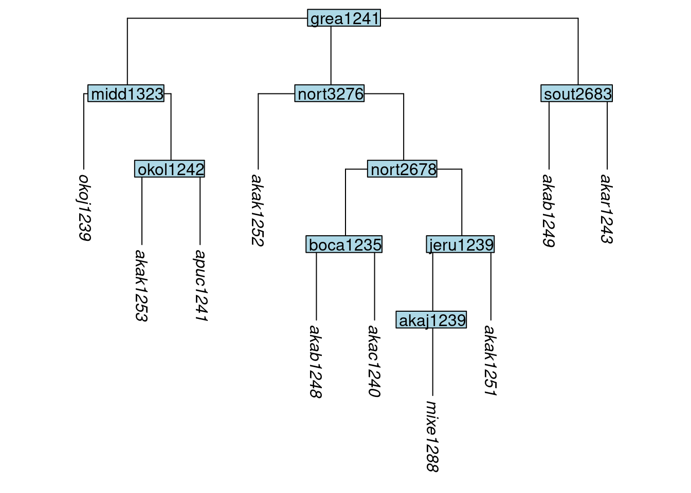
The function abridge_labels() will issue a warning if there are tip or node labels in which it is unable to identify a glottocode. We will see an example of this shortly below.
In glottolog’s trees, the branches are all of equal length. We will discuss how to assign more realistic branch lengths in Section How to add branch lengths.
3.2 How to combine trees
As discussed Macklin-Cordes and Round (2021a), the comparison of languages across language families unavoidably carries a commitment to a genealogical hypothesis, even if that hypotheses is, tacitly, that all families are equally (un)related. Given that making such hypotheses is unavoidable, it will be most beneficial for progress in the field to make them explicit. To enable typologists to explore genealogical hypotheses and to make those hypotheses explicit, glottoTrees provides tools for combining multiple glottolog trees into one.
To begin with a small example, here we combine five glottolog families to represent the hypothesised Arnhem group in northern Australia (Green 2003). First we create a multiPhylo object containing the five glottolog language families (Gunwinyguan, Mangarrayi-Maran, Maningrida, and the isolates Kungarakany and Gaagudju):
arnhem_family_names <-
c("Gunwinyguan", "Mangarrayi-Maran", "Maningrida", "Kungarakany", "Gaagudju")
multiPhylo_arnhem <- get_glottolog_trees(arnhem_family_names)The glottoTrees function assemble_rake() enables the trees in a multiPhylo object to be assembled into a single tree with a rake structure at its root. Here we apply assemble_rake() to our multiPhylo object and assign the resulting, single tree to the object tree_arnhem.
tree_arnhem <- assemble_rake(multiPhylo_arnhem)For plotting, it will be convenient to shorten the labels in the tree to just the glottocodes, using abridge_labels(). However, the root node in our newly created tree tree_arnhem has no label. Accordingly, the function abridge_labels() will issue a warning, that it encountered one node without a glottocode. This is not an error message, and abridge_labels() still shortens all labels to glottocodes where it can; it is just flagging the fact that it was not able to do so in all cases.
tree_arnhem_abr <- abridge_labels(tree_arnhem)## Warning in abridge_labels(tree_arnhem): Labels without glottocodes were detected
## and left unchanged for: 0 tip(s); 1 node(s):Plotting the resulting tree enables us to inspect our newly created Arnhem tree. Note how all five families are joined to the root in a rake-like structure, without any additional subgrouping.
plot_glotto(tree_arnhem_abr, nodelabels = FALSE)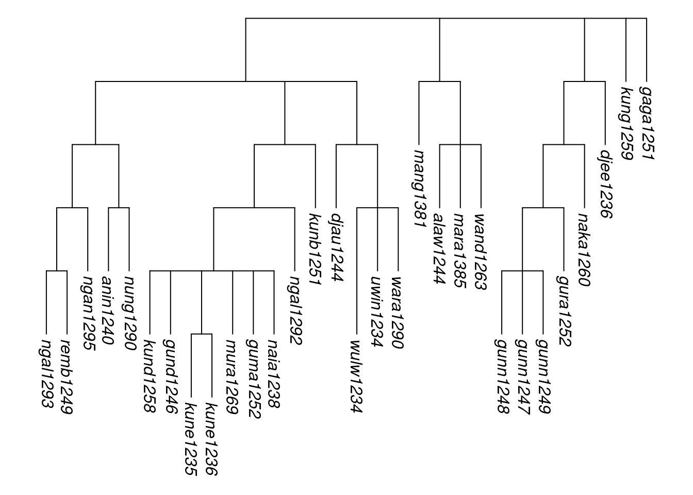
It is possible to give a combined tree more structure, by using assemble_rake() iteratively. For instance, suppose we wished to hypothesise that Gunwinyguan, Mangarrayi-Maran and Maningrida form their own subgroup. First, we create a multiPhylo object containing those three trees, and combine it into a single rake tree, which we call tree_A:
multiPhylo_A <- get_glottolog_trees(c("Gunwinyguan", "Mangarrayi-Maran", "Maningrida"))
tree_A <- assemble_rake(multiPhylo_A)Then we create the final tree by combining tree_A with the two isolate family trees:
multiPhylo_arnhem2 <- c(tree_A, get_glottolog_trees(c("Kungarakany", "Gaagudju")))
tree_arnhem2 <- assemble_rake(multiPhylo_arnhem2)
tree_arnhem2_abr <- abridge_labels(tree_arnhem2)## Warning in abridge_labels(tree_arnhem2): Labels without glottocodes were
## detected and left unchanged for: 0 tip(s); 2 node(s): ,plot_glotto(tree_arnhem2_abr, nodelabels = FALSE)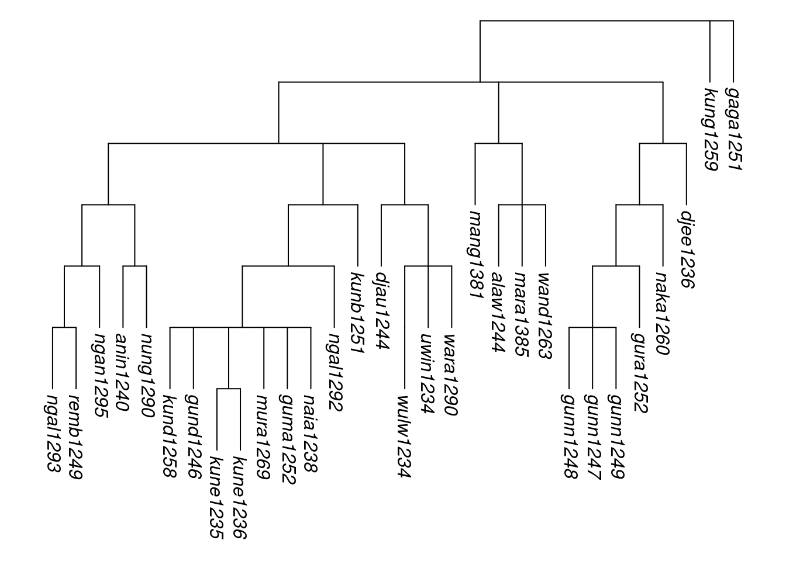
Typological studies often examine languages from very many families. To group all 420 families into a single ‘supertree’, glottoTrees provides the function assemble_supertree(). By default, the function returns a supertree that divides first into glottolog’s six macroareas, with an internal node for each, and directly below these macroarea nodes appear all of the glottolog families, grouped by their main_macroarea mentioned in Section Glottolog’s genealogical data above. This tree is enormous, so we do not plot it here. It is obtained like this:
my_supertree <- assemble_supertree()The highest-level, macroarea groupings can also be controlled through the function’s argument macro_groups. For instance, to group all of the world’s families directly into a 420-pronged rake structure, set macro_groups = NULL:
my_supertree <- assemble_supertree(macro_groups = NULL)It is also possible to group macroareas together, for example, to combine North and South America into a single group. Grouping of macroareas is achieved by setting the macro_groups argument to a list whose items are the desired groups of macroareas. Each group will then appear as one of the highest-level nodes of the tree, and all of its families below it. For instance, to keep all of glottolog’s macroareas separate, but to combine North and South America into a single group, the following code would be used. First we define a list, which we’ve called my_list, within which any groupings containing more than one macroarea are represented as a vector, using the c() function:
my_list <- list("Africa", "Australia", "Eurasia", "Papunesia",
c("South America", "North America"))We then use that list as the macro_groups argument of assemble_supertree():
my_supertree <- assemble_supertree(macro_groups = my_list)Taking a second example, to create a supertree containing only the families whose main_macroarea is either Africa or Eurasia, and to place Africa and Eurasia under separate, highest-level nodes, we would use:
my_list <- list("Africa", "Eurasia")
my_supertree <- assemble_supertree(macro_groups = my_list)3.3 How to modify trees
There are several reasons why typologists may wish to use a tree that departs from the glottolog trees. Most commonly, a typological study will cover a set of languages that differs from the set of tips in any single glottolog tree, either through the exclusion of some of the lects that glottolog represents as tips or through the distinction of additional lects. A third case that can arise is when glottolog places one or more dialects at the tree’s tips and more a general, language node above them. The typologist may have data that applies to the language (an internal node) rather than the dialects (the tips), yet the calculation of genealogically-sensitive averages and proportions requires one’s typological variables to be related to the tips of trees, not to internal nodes. In these cases and many others, the typologist may wish to alter the glottolog tree to suit the purposes of the research. The glottoTrees package supplies a set of functions to aid in performing each of these tree manipulations. In this section we introduce them and illustrate their use.
In the following examples, we will make use glottolog’s representation of the Great Andamanese family, whose labels we shorten to just the glottocodes using abridge_labels():
tree_GA <- get_glottolog_trees("GreatAndamanese")
tree_GA_abr <- abridge_labels(tree_GA)
plot_glotto(tree_GA_abr)3.3.1 How to remove tips
Firstly, we illustrate the removal of tips from a tree. There are two functions in glottoTrees for doing this. The function remove_tip() works by specifying which tips are to be removed, while the function keep_tip() works by specifying which tips are to be retained. First we will remove three of the original ten tips in the Great Andamanese tree. We do this by setting the label argument of remove_tip() to a vector containing the labels of the tips to be removed. Within the vector, the labels can appear in any order.
tree_GAa <- remove_tip(tree_GA_abr, label = c("akab1249", "akak1251", "apuc1241"))
plot_glotto(tree_GAa)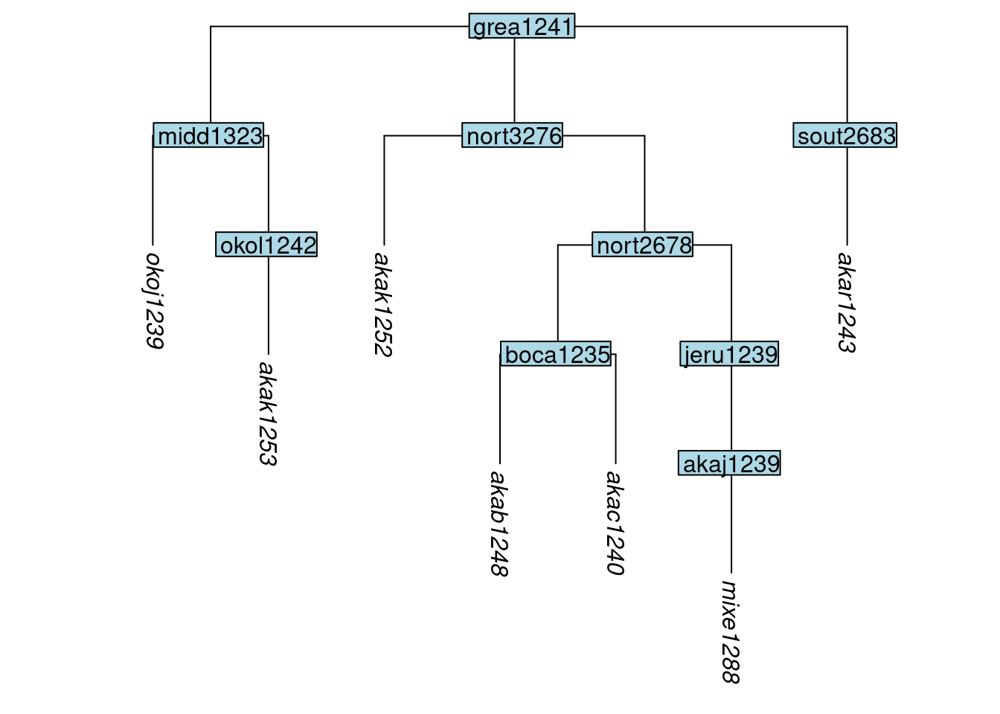
In this next example, we remove the tips akab1249 and akar1243. These tips are the only tips that sit below the internal node sout2683. This is significant, because it triggers a convention in tree manipulation, that if all tips below a node are removed, then the node is removed also. We see that here:
tree_GAb <- remove_tip(tree_GA_abr, label = c("akab1249", "akar1243"))
plot_glotto(tree_GAb)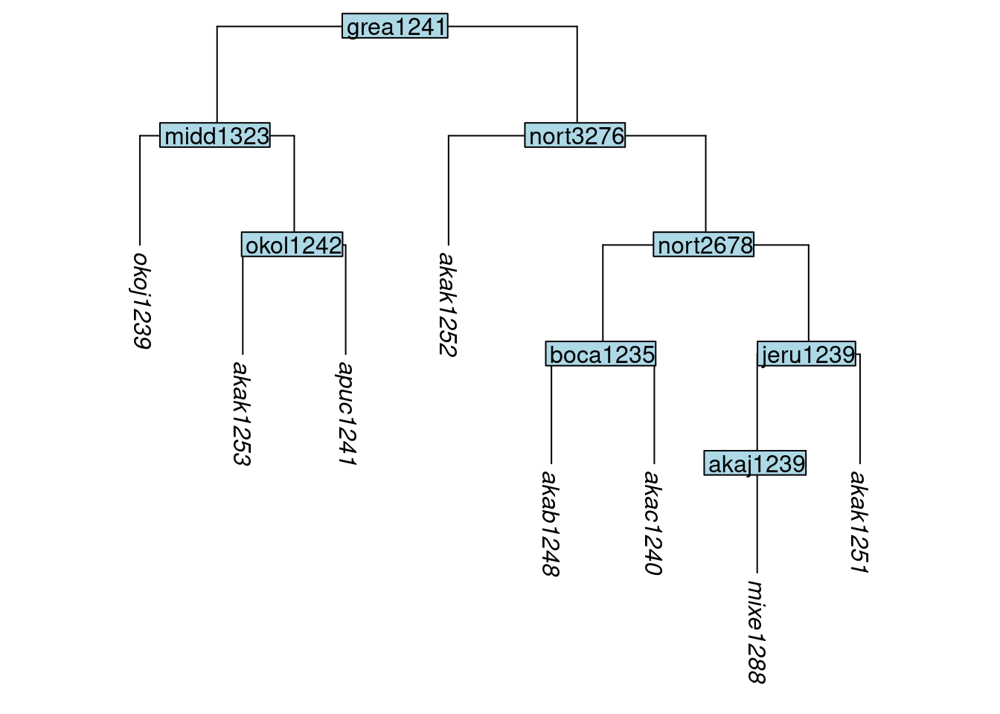
We now illustrate the usage of the glottoTrees function keep_tip(). Here we use it to retain six of the original ten tips in the Great Andamanese. We do this by setting the label argument to a vector containing the labels of the six desired tips.
tree_GAc <- keep_tip(tree_GA_abr, label = c("akar1243", "akak1251", "akac1240",
"akak1252", "apuc1241", "okoj1239"))
plot_glotto(tree_GAc)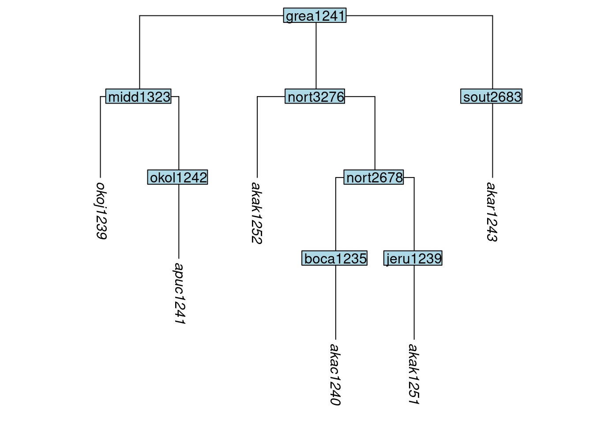
As before, if our use of keep_tip() results in a node having all of the tips below it removed, then the node will also be removed automatically. This is illustrated here, where the node boca1235 is removed automatically because neither of the tips below it are kept:
tree_GAd <- keep_tip(tree_GA_abr, label = c("akar1243", "akak1251", "akak1252",
"apuc1241", "okoj1239"))
plot_glotto(tree_GAd)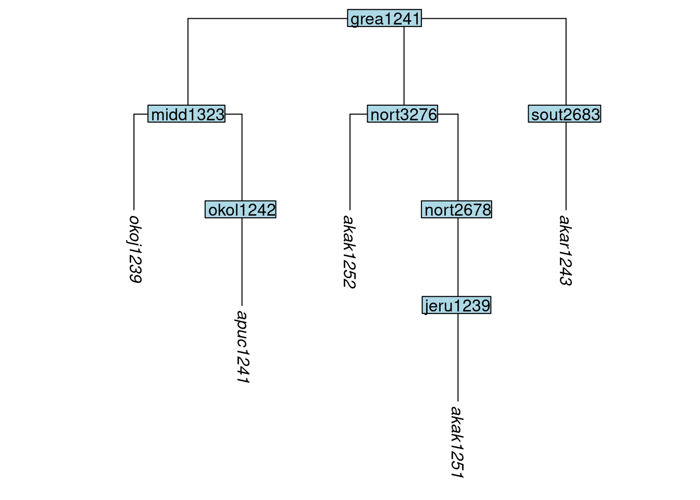
3.3.2 How to remove tips and convert nodes to tips
As mentioned earlier, many of the tips in glottolog’s trees correspond to dialects, with languages represented as nodes above the dialectal tips. One usage case we foresee is that a typologist will wish to study a set of language varieties, some of which correspond to glottolog’s tips and some of which correspond to nodes. The glottoTrees function keep_as_tips() takes an argument label which can contain both tip labels and node labels. Any tips will be kept, and any nodes will be converted into tips, with all of the structure below them being removed. Be mindful when using keep_as_tips() that it is not possible to both convert a node into a tip and also retain the structure below it, such as tips that it dominates. Here we keep the same tips as in the tree above, while also converting the node boca1235 into a tip:6
tree_GAe <- keep_as_tip(tree_GA_abr, label = c("akar1243", "akak1251", "akak1252",
"apuc1241", "okoj1239", "boca1235"))
plot_glotto(tree_GAe)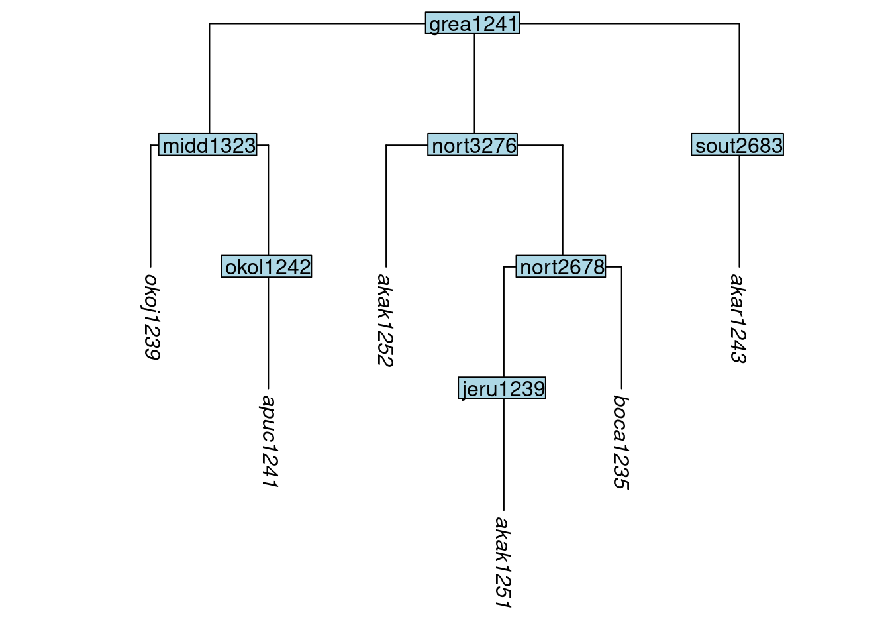
One workflow that we envision for keep_as_tip() is that the typologist has prepared a CSV file, one of whose columns is named tip and contains the glottocodes of all the language varieties in the study. This CSV file can be loaded in R and assigned to a dataframe, and then its tip column can be passed to keep_as_tip() as the value of the labels argument, like this:
my_dataframe <- read.csv("my_data_file.csv", stringsAsFactors = FALSE)
my_new_tree <- keep_as_tip(my_old_tree, label = my_dataframe$tip)To just convert one or more nodes into tips, use convert_to_tip(), as we do here to convert the nodes okol1242 and sout2683 to tips:
tree_GAf <- convert_to_tip(tree_GA_abr, label = c("okol1242", "sout2683"))
plot_glotto(tree_GAf)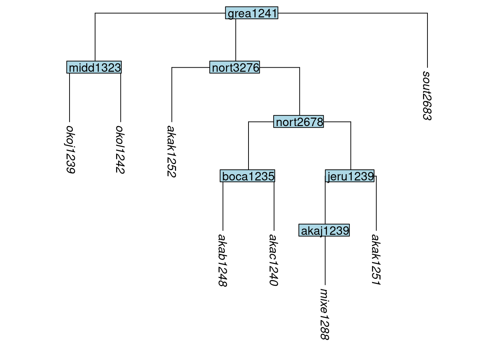
3.3.3 How to remove internal nodes
Sometimes, the removal of tips will cause one or more of the remaining tips to sit below a node which dominates only it. This reflects that fact that remove_tip(), keep_tip() and keep_as_tip() all preserve the original depth of any tips that remain in the tree (you may like to confirm this by reviewing the plots above). Depending on the researcher’s needs, this outcome may or may not be desirable. If it is undesirable, then non-branching, internal nodes can be removed using the glottoTrees function collapse_node(). For instance, here we remove two of the non-branching nodes from the tree tree_GAc above, by naming them in the label argument of collapse_node(). In the resulting tree, these nodes have been removed, thus reducing the depth of the tips below them:
tree_GAg <- collapse_node(tree_GAc, label = c("boca1235", "okol1242"))
plot_glotto(tree_GAg)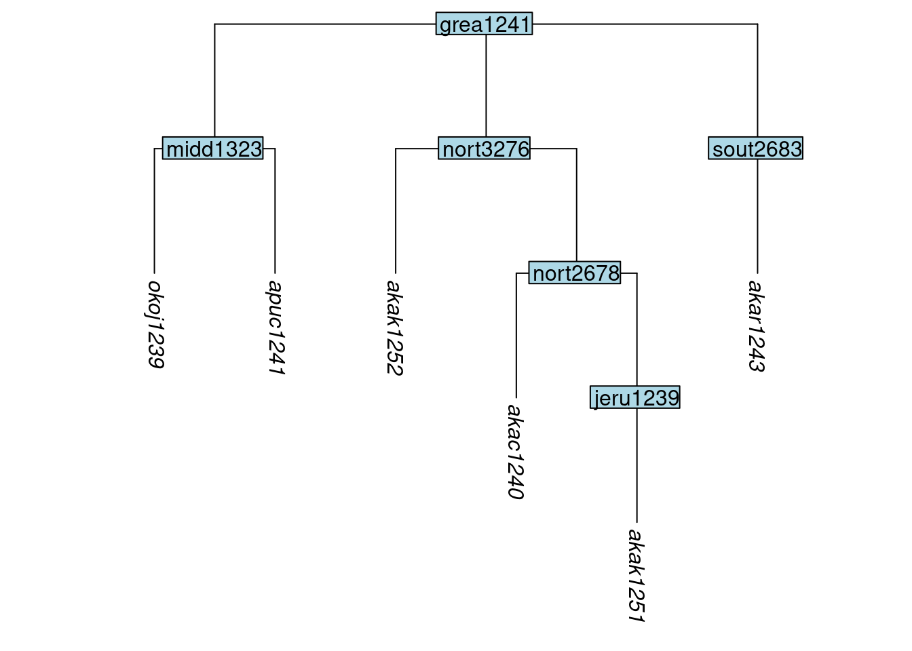
When deciding whether to collapse nodes, in can be handy to know which nodes in a tree that have only one child below them. The function nonbranching_nodes() will return a vector of all such nodes, for example:
nonbranching_nodes(tree_GAc)## [1] "okol1242" "boca1235" "jeru1239" "sout2683"nonbranching_nodes(tree_GAg)## [1] "jeru1239" "sout2683"The function collapse_node() can also be used to alter a subgrouping hypothesis, and specifically, to remove a layer of subgrouping, converting a nested structure ((A,B),C) into a flat structure (A,B,C). For instance, here we remove the okol1242 node of the original glottolog Great Andamanese tree, converting its two daughter languages into sisters of okoj1239:
tree_GAh <- collapse_node(tree_GA_abr, label= "okol1242")
plot_glotto(tree_GAh)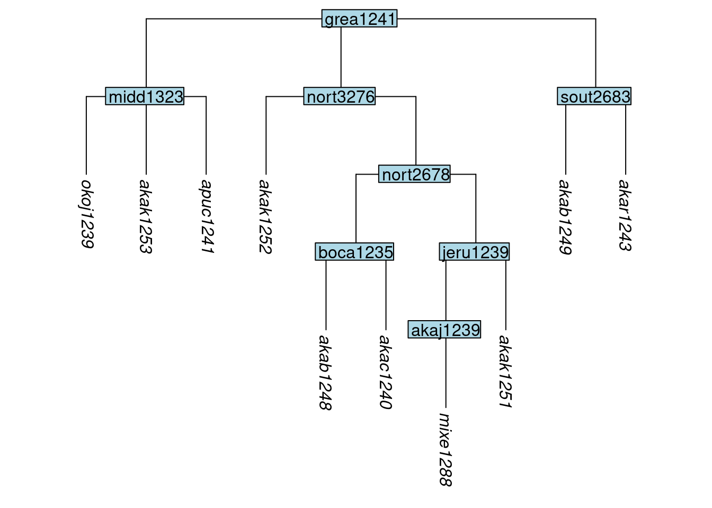
3.3.4 How to add tips
The function add_tip() allows tips to be added to a tree. The label argument specifies the name of the new tip, while parent_label specifies the label of the node below which the new tip should appear. Here we add a tip xxxx1234 below the node sout2683:
tree_GAi <- add_tip(tree_GA_abr, label = "xxxx1234", parent_label = "sout2683")
plot_glotto(tree_GAi)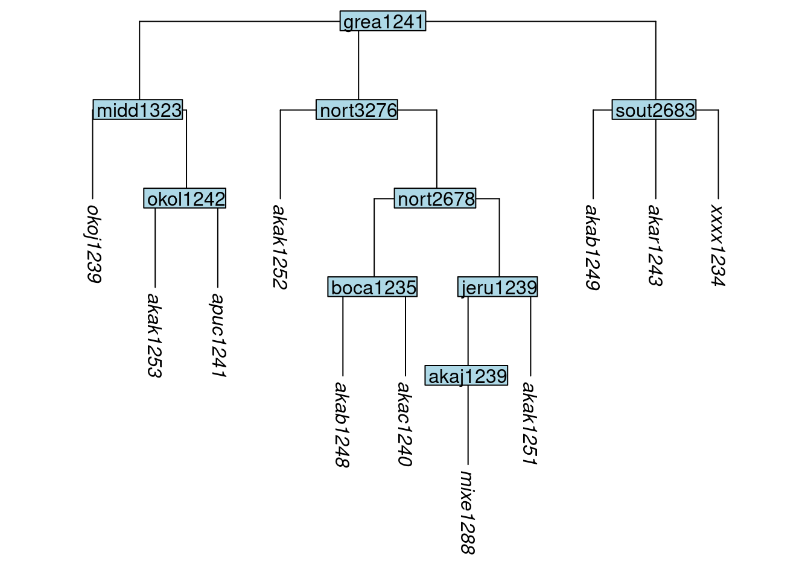
3.3.5 How to clone tips
Next we illustrate the cloning of tips. Cloning tips may be useful when glottolog provides only one glottocode, and thus only one tree tip, corresponding to multiple lects in the typologist’s study. To clone a tip, use the function clone_tip() and in the label argument, provide a vector of the tips to be cloned. Here we clone tips akar1243 and akak1252:
tree_GAj <- clone_tip(tree_GA_abr, label = c("akar1243", "akak1252"))
plot_glotto(tree_GAj)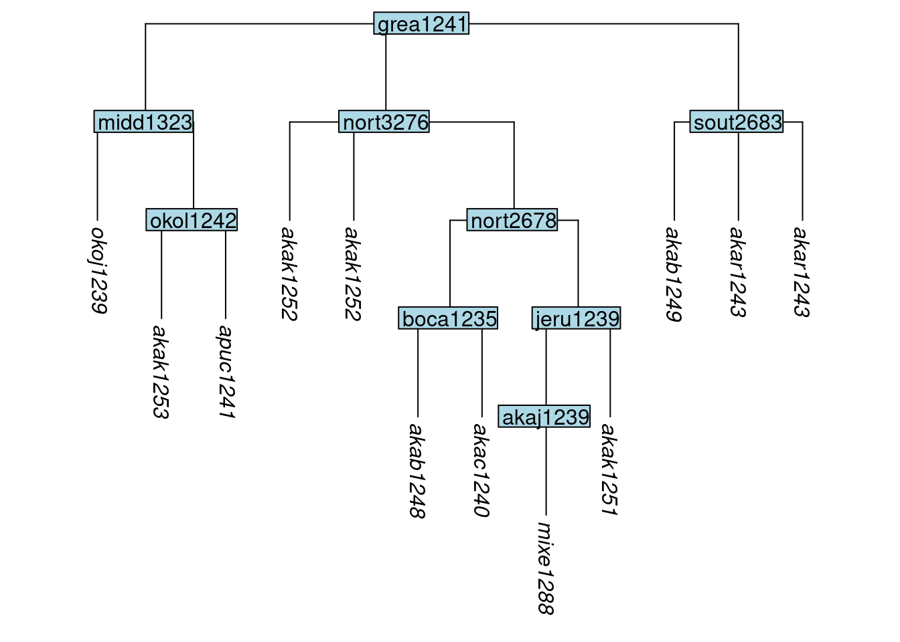
By default, clones are added to the tree as sisters directly beneath the parent node of the original tip. An alternative is to create a new subgroup for each set of sister clones, using the subgroup argument and setting it to subgroup = TRUE. Each newly created subgroup node is given a label that matches the cloned tips it dominates:
tree_GAk <- clone_tip(tree_GA_abr, label = c("akar1243", "akak1252"), subgroup = TRUE)
plot_glotto(tree_GAk)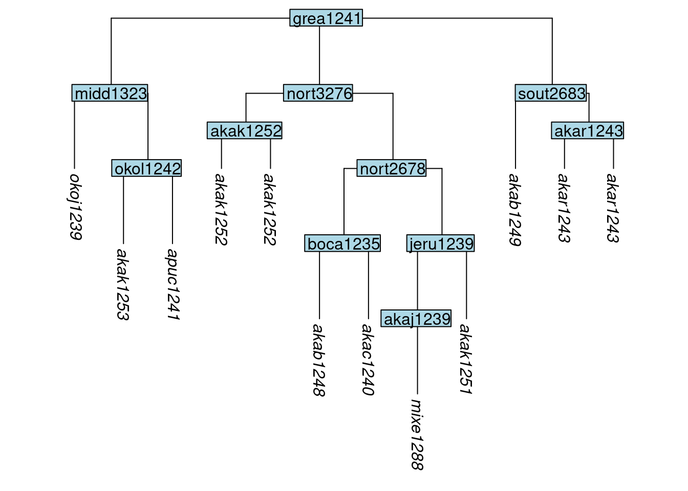
It is also possible to make more than one clone using the n argument. Here we create three new clones of akab1248 and place them in a subgroup:
tree_GAl <- clone_tip(tree_GA_abr, label = "akab1248", n = 3, subgroup = TRUE)
plot_glotto(tree_GAl)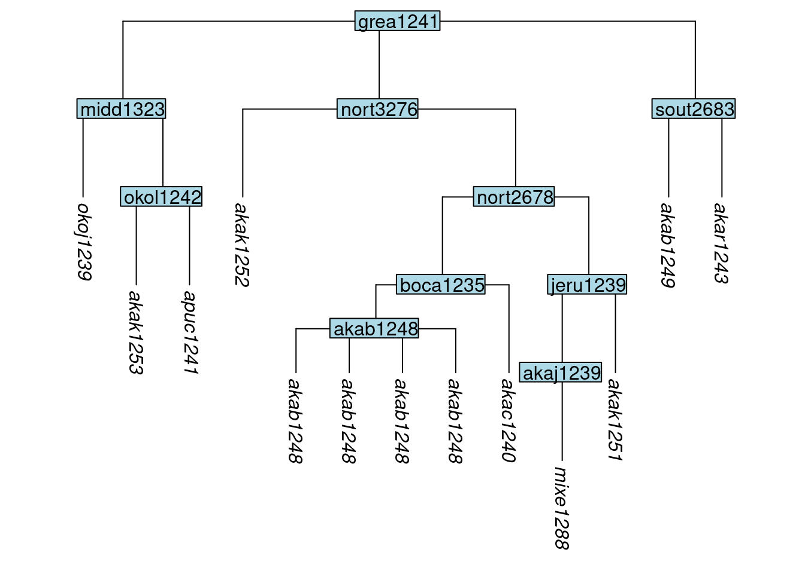
One of the consequences of cloning tips is that the in the resulting tree, not all tips will have distinct names. The function apply_duplicate_suffixes() will add a suffix to any tips with duplicate labels, to make them unique.7 The suffix will consist of a hyphen followed by a number. Here we add suffixes to the tree tree_GAj:
tree_GAm <- apply_duplicate_suffixes(tree_GAj)
plot_glotto(tree_GAm)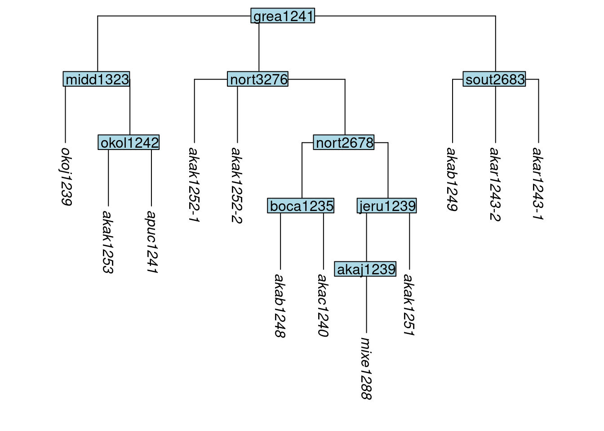
3.3.6 How to move a tip
Using the function move_tip(), a tip can be moved to a new position, beneath a new parent node (one of the nodes already in the tree) which is specified with the parent_label argument:
tree_GAn <- move_tip(tree_GA_abr, label = "apuc1241", parent_label = "jeru1239")
plot_glotto(tree_GAn)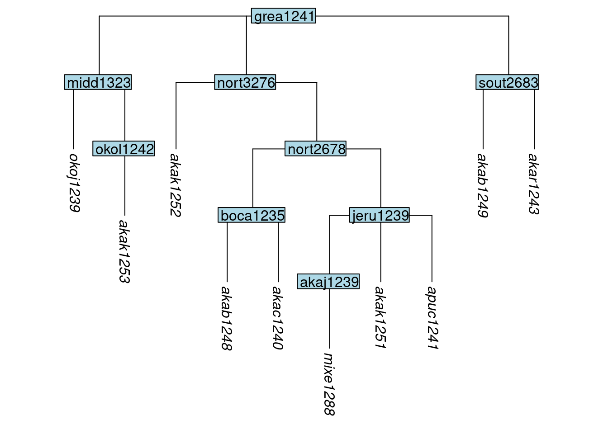
3.3.7 How to move a node and its descendants
In a similar fashion, the function move_node() is used to move an internal node, along with all of the structure below it, to a position beneath a new parent node:
tree_GAo <- move_node(tree_GA_abr, label = "jeru1239", parent_label = "okol1242")
plot_glotto(tree_GAo)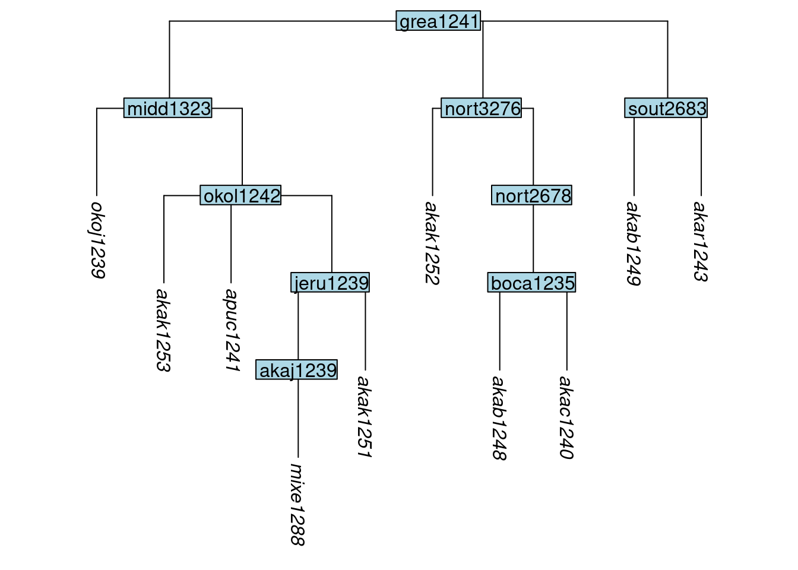
3.3.8 Summary: a general-purpose toolkit for curating trees’ topology
The functions remove_tip(), keep_tip(), keep_as_tip(), convert_to_tip(), collapse_node(), add_tip(), clone_tip(), move_tip() and move_node() provide a general-purpose toolkit for modifying a single glottolog tree, or a combined tree, or supertree, to make its set of tips, and the subgrouping of those tips, conform to the set of lects that a typologist is analysing in a typological study.
3.4 How to add branch lengths
Branch lengths in a tree convey information, and most phylogenetic comparative methods, including genealogically-sensitive averages and proportions, are sensitive to the information represented by the branch lengths. (To be specific, genealogically-sensitive averages and proportions are sensitive to the relative lengths of the branches, so multiplying all of the branch lengths in a tree by some constant amount would not affect the results.)
Glottolog’s trees contain informative subgrouping structure, but the branch lengths are all equal. Even without knowing what the true branch lengths are for a linguistic tree, we do know that a situation in which all are equal is highly unlikely. A good approximation to the most-likely8 distribution of branch lengths in a phylogenetic tree, under a variety of assumptions, is exponential (Venditti, Meade, and Pagel 2010), i.e., very long branches are rare, and very short ones are frequent. This notion is implemented in the glottoTrees package by the function rescale_branches_exp(), which sets the deepest branches to length 1/2, then next layer to length 1/4, then the next to 1/8 and so on. This will produce a more plausible set of branch lengths, even in the absence of firm knowledge of exact lengths, and on these grounds we advocate its use if additional information about branch lengths is not available.
Here is an example of the result of applying exponential branch lengths to glottolog’s Great Andamanese tree:
tree_GAp <- rescale_branches_exp(tree_GA_abr)
plot_glotto(tree_GAp)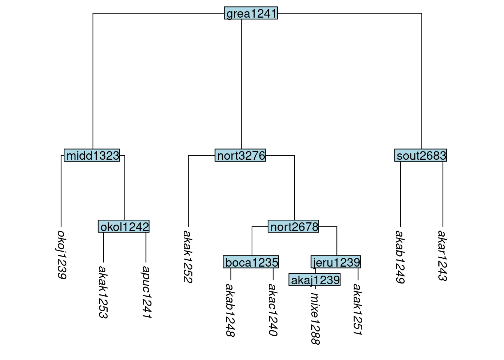
Here is an example of the result of applying them to glottolog’s Eskimo-Aleut tree, of 30 tips:
tree_EA <- get_glottolog_trees("Eskimo-Aleut")
tree_EA_abr <- abridge_labels(tree_EA)
tree_EAa <- rescale_branches_exp(tree_EA_abr)
plot_glotto(tree_EAa, nodelabels = FALSE)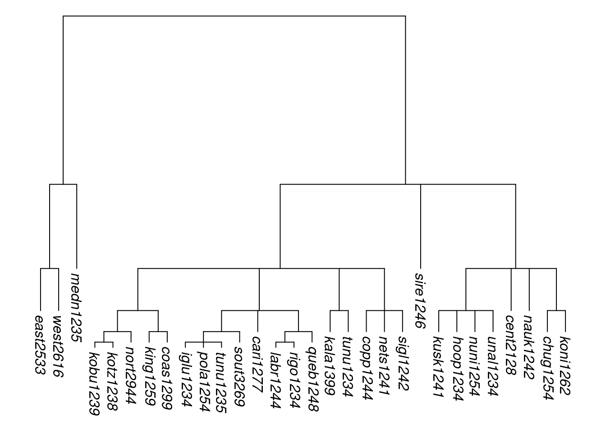
An additional option is to stretch the terminal branches so that all tips are equidistant from the root, creating what is known as an ultrametric tree. This is done using the function ultrametricize().
tree_EAb <- ultrametricize(tree_EAa)
plot_glotto(tree_EAb, nodelabels = FALSE)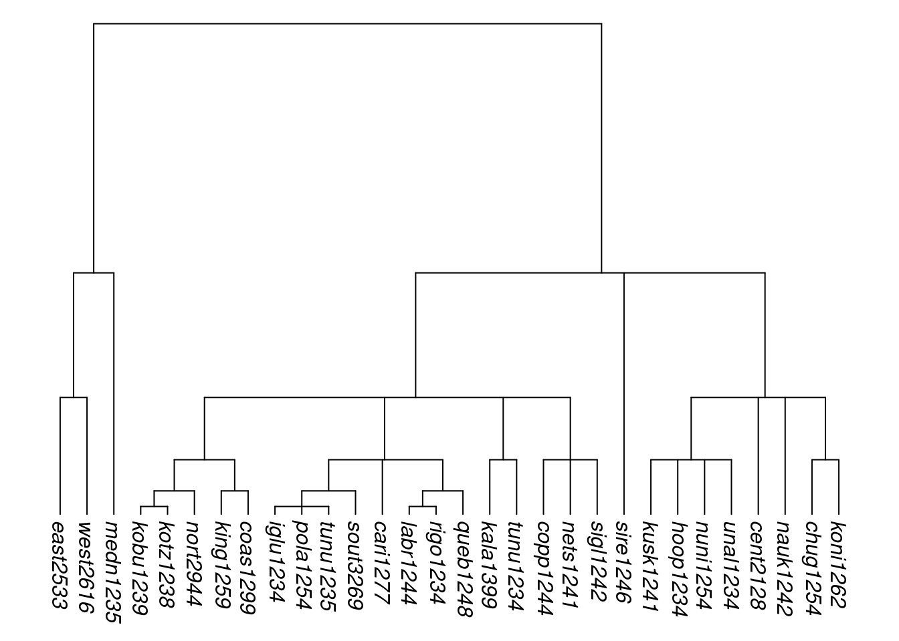
An additional function, rescale_deepest_branches(), can be used to adjust just the deepest layer of branches. This may be useful where multiple family trees have been joined together, and there is a desire to manipulate the implied closeness or distance between the first-order branches. For example, here we take the hypothesised Arnhem group from Section @ref(combining-trees). First we assign exponential branch lengths with set_branch_lengths_exp(), which sets the deepest branch length to 1/2. Then we triple the distance of the deepest level of relationships by changing the first branch length to 1.5 using rescale_deepest_branches(), before ultrametricising the tree:
tree_arnhem_a <- rescale_branches_exp(tree_arnhem_abr)
tree_arnhem_b <- rescale_deepest_branches(tree_arnhem_a, 1.5)
tree_arnhem_c <- ultrametricize(tree_arnhem_b)
plot_glotto(tree_arnhem_c, nodelabels = FALSE)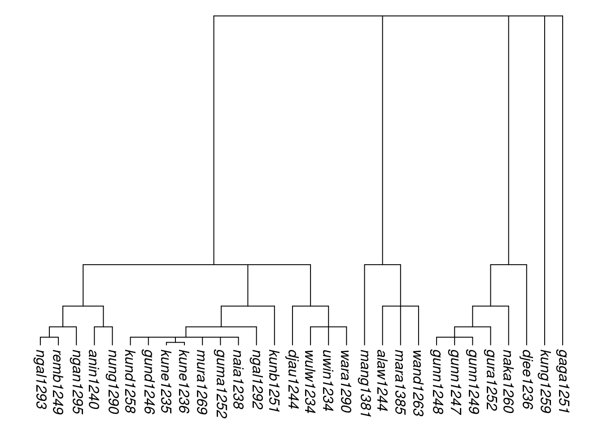
3.5 Exporting trees for use with other software
In R, trees can be saved to file in Newick format using the function write.tree() in the ape package. Files like this can be opened by other software such as FigTree9, which can be used to interactively generate tree plots that may be useful for publication and dissemination. For instance, here we write the tree tree_arnhem_c to a file whose filename ends in the standard file extension, .tree:
write.tree(tree_arnhem_c, "my_arnhem_tree.tree")Often it will be desirable to reproduce a tree with labels that are more reader-friendly than glottocodes. glottoTrees provides the function relabel_with_names(), which will replace full glottolog labels, or labels consisting of just a glottocode, with glottolog’s corresponding language, dialect, subgroup or family name. Here we relabel the Arnhem tree by the languages’ names. As was the case with abridge_labels(), warnings are given by relabel_with_names() if a tree contains any nodes that cannot be relabeled in this way; these are not errors, just alerts.
tree_arnhem_c_namelabels <- relabel_with_names(tree_arnhem_c)## Warning in relabel_with_names(tree_arnhem_c): Labels without glottocodes were
## detected and left unchanged for: 0 tip(s); 1 node(s):plot_glotto(tree_arnhem_c_namelabels, nodelabels = FALSE)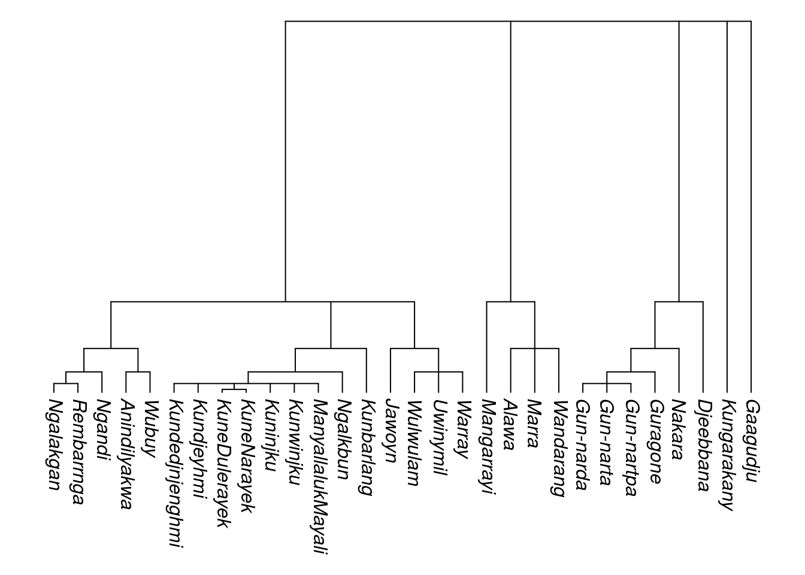
4 Putting it together: A worked example
In this section we provide a real worked example of the use of the methods described above.
Yin (2020) examined violations of the sonority sequencing principle in 496 languages, and calculated the genealogically-sensitive proportions of languages in which various violations occurred. The language sample consisted of 496 languages in the CLICS2 database (Anderson et al. 2018) and the AusPhon-Lexicon database (Round 2017). The language sample was not balanced in the traditional sense, and phylogenetic methods were used to help produce a principled interpretation of the data.
Yin’s raw data consisted of a table of languages’ names and glottocodes and indications of whether or not the languages had consonant clusters in word-initial onsets or word-final codas that contained sonority reversals, coded as 1 for yes and 0 for no. This dataset is provided with the phyloWeights package as a dataframe named yin_2020_data whose columns are name, tip, has_onset_violation and has_coda_violation. The first ten rows are shown here:
head(yin_2020_data, n = 10)## name tip has_onset_violation has_coda_violation
## 1 Abkhaz abkh1244 1 1
## 2 Abui abui1241 0 0
## 3 Achagua acha1250 0 1
## 4 Adang adan1251 0 1
## 5 Adnyamathanha adny1235 0 0
## 6 Adyghe adyg1241 1 1
## 7 Hokkaidoainu ainu1240 0 0
## 8 Alawa alaw1244 1 0
## 9 Standardalbanian alba1267 1 1
## 10 Aleut aleu1260 1 14.1 Preparing a tree
The tree for Yin’s study was constructed from a glottolog supertree, using glottolog version 4.2. Yin’s supertree made use of glottolog’s macroareas. Since the language sample covered relatively few families in the Americas, a single group was used for South America and North America. Additionally, the only African language available in the sample was Arabic, so Africa and Eurasia were grouped together:
yin_macro <- list(c("South America", "North America"), c("Africa", "Eurasia"),
"Papunesia", "Australia")
supertree <- assemble_supertree(macro_groups = yin_macro, glottolog_version = "4.2")
supertree_abr <- abridge_labels(supertree)## Warning in abridge_labels(supertree): Labels without glottocodes were detected
## and left unchanged for: 0 tip(s); 5 node(s): World, SouthAmerica-NorthAmerica,
## Africa-Eurasia, Papunesia, AustraliaFive tips were cloned, in cases where Yin had data for two varieties corresponding to just one tip in the glottolog supertree:
supertree_a <- clone_tip(supertree_abr, subgroup = TRUE,
label = c("ayab1239", "basu1242", "biri1256",
"ikar1243", "peri1265"))
supertree_b <- apply_duplicate_suffixes(supertree_a)Eight tips were added, in cases where for sister lects (A,B), glottolog placed A as a node above B. In such cases, in new tip A was placed below the existing glottolog node A:
supertree_c <- supertree_b
nodes_to_add_as_tips <- c("alor1249", "gami1243", "guri1247", "mand1415",
"sins1241", "wang1291", "warl1254", "yand1253")
# Loop through these nodes, and use add_tip() to add the new tip:
for (node_i in nodes_to_add_as_tips) {
supertree_c <- add_tip(supertree_c, label = node_i, parent_label = node_i)
}From this supertree, the 496 languages in Yin’s dataset were kept. The internal node mada1298 was collapsed, as were all non-branching internal nodes:
supertree_d <- keep_as_tip(supertree_c, label = yin_2020_data$tip)
supertree_e <- collapse_node(supertree_d, label = "mada1298")
supertree_f <- collapse_node(supertree_e, label = nonbranching_nodes(supertree_e))Finally, branch lengths were assigned. Branches were first assigned exponential lengths. Then, in order to diminish the importance of the macro groups, the branches above them were shortened to a length of 1/40. The effect of this decision is that the implied distance between families in different macro groups is only marginally greater than between families within a single macro group.
supertree_g <- rescale_branches_exp(supertree_f)
yin_2020_tree <- rescale_deepest_branches(supertree_g, 1/40)The resulting tree appears as in Figure @ref(fig:yin-tree), which is plotted with the following code:
full_names <- yin_2020_data$name[match(yin_2020_tree$tip.label, yin_2020_data$tip)]
name_tree <- yin_2020_tree
name_tree$tip.label <- full_names
plot(ladderize(name_tree, right = FALSE), type = "fan",
cex = 0.3, label.offset = 0.002, edge.width = 0.5)Supertree of 496 languages used in Yin (2020).
4.2 Preparing the dataframe of typological data
In order to calculate phylogenetic weights and genealogically-sensitive proportions, in addition to the tree (or a set of trees) we require a dataframe with (a) one column tip, whose contents match the tip labels in the trees, and (b) other columns containing numerical data to be averaged. The dataframe yin_2020_data has a column tip and two columns of numerical data has_onset_violation and has_coda_violation, and thus it meets the requirements we need. It also contains a column, names, of non-numeric data. Columns of non-numeric data (other than tip) are ignored by phylo_average(), so we do not need to remove them.
4.3 Calculating genealogically-sensitive proportions
The results are calculated using phylo_average(), setting its phy argument to the tree we have constructed, yin_2020_tree, and its data argument to the dataframe we have prepared, yin_2020_data. A warning is issued alerting us that the dataframe contains a non-numeric column that gets ignored:
yin_2020_results <- phylo_average(phy = yin_2020_tree, data = yin_2020_data)## Warning in phylo_average(phy = yin_2020_tree, data = yin_2020_data): `data`
## contains non-numeric columns other than `tip`, which have been ignored: name.Results are in the format described in Section @ref(averages). In this case, we are using only one tree, so the results are brief. The genealogically-sensitive proportions according to the ACL and BM methods are the following.
yin_2020_results$ACL_averages## tree has_onset_violation has_coda_violation
## 1 tree1 0.3711102 0.409806yin_2020_results$BM_averages## tree has_onset_violation has_coda_violation
## 1 tree1 0.4014756 0.3847729The first ten rows of phylogenetic weights according to the ACL and BM methods are:
head(yin_2020_results$ACL_weights, n = 10)## name tip tree1
## 1 Abkhaz abkh1244 0.0069858330
## 2 Abui abui1241 0.0012637162
## 3 Achagua acha1250 0.0002456679
## 4 Adang adan1251 0.0002197767
## 5 Adnyamathanha adny1235 0.0000637717
## 6 Adyghe adyg1241 0.0069858330
## 7 Hokkaidoainu ainu1240 0.0174645825
## 8 Alawa alaw1244 0.0019652742
## 9 Standardalbanian alba1267 0.0023699724
## 10 Aleut aleu1260 0.0085266857head(yin_2020_results$BM_weights, n = 10)## name tip tree1
## 1 Abkhaz abkh1244 0.0049475265
## 2 Abui abui1241 0.0021424363
## 3 Achagua acha1250 0.0009109899
## 4 Adang adan1251 0.0009391784
## 5 Adnyamathanha adny1235 0.0008929209
## 6 Adyghe adyg1241 0.0049475265
## 7 Hokkaidoainu ainu1240 0.0064304759
## 8 Alawa alaw1244 0.0027423594
## 9 Standardalbanian alba1267 0.0040995307
## 10 Aleut aleu1260 0.0055527679As a point of comparison, the raw proportions, which are equal to the means of the columns has_onset_violation and has_coda_violation, are these:
mean(yin_2020_data$has_onset_violation)## [1] 0.3649194mean(yin_2020_data$has_coda_violation)## [1] 0.31451615 Using these methods in typological research
As we seek to analyse the empirical diversity of attested languages, there are fundamental reasons why genealogy must be part of picture (see Macklin-Cordes and Round 2021a). And since the genealogies of human languages are still incompletely known, it is imperative to make our phylogenetic hypotheses and assumptions as explicit and as testable as possible. In this document, we hope have shown that doing so is entirely feasible.
Through the use of glottoTrees and phyloWeights, we hope that in the future, linguistic trees and the code used to produce them can be published together with typological studies. This will enable subsequent researchers to replicate the study’s findings, and just as importantly, to modify its assumptions by modifying the trees, and thereby to test further hypotheses inspired by the initial research.
If you find these practical tools useful in your own research, please cite the packages as E. R. Round (2021a) and E. R. Round (2021b). If you wish to cite the notion of genealogically-sensitive averages and proportions, please cite either Macklin-Cordes and Round (2021a) and/or the more specific references therein.
If you think you’ve encountered a bug or anomalous behaviour in glottoTrees and phyloWeights, please be in contact, either through the package github pages or by email: e.round@uq.edu.au. It’s important for the good of the science that linguists can use these methods without undue impediments.
Citation & Session Info
Round, Erich. 2022. Practical phylogenetic comparative methods for linguistic typology. Surrey Morphology Group, University of Surrey & Ancient Language Lab, University of Queensland. url: https://slcladal.github.io/phylo.html (Version 2022.10.10).
@manual{Round2022net,
author = {Round, Erich},
title = {Practical phylogenetic comparative methods for linguistic typology},
note = {https://slcladal.github.io/phylo_for_typology.html},
year = {2022},
organization = {{Surrey Morphology Group, University of Surrey} and {Ancient Language Lab, School of Languages and Cultures, University of Queensland}},
address = {{Guildford, UK} and {St Lucia, QLD}},
edition = {2022.10.10}
}sessionInfo()## R version 4.2.1 (2022-06-23)
## Platform: x86_64-pc-linux-gnu (64-bit)
## Running under: Ubuntu 22.04.1 LTS
##
## Matrix products: default
## BLAS: /usr/lib/x86_64-linux-gnu/blas/libblas.so.3.10.0
## LAPACK: /usr/lib/x86_64-linux-gnu/lapack/liblapack.so.3.10.0
##
## locale:
## [1] LC_CTYPE=en_AU.UTF-8 LC_NUMERIC=C
## [3] LC_TIME=en_AU.UTF-8 LC_COLLATE=en_AU.UTF-8
## [5] LC_MONETARY=en_AU.UTF-8 LC_MESSAGES=en_AU.UTF-8
## [7] LC_PAPER=en_AU.UTF-8 LC_NAME=C
## [9] LC_ADDRESS=C LC_TELEPHONE=C
## [11] LC_MEASUREMENT=en_AU.UTF-8 LC_IDENTIFICATION=C
##
## attached base packages:
## [1] stats graphics grDevices datasets utils methods base
##
## other attached packages:
## [1] ape_5.6-2 glottoTrees_0.1.0008 phyloWeights_0.3.0005
## [4] flextable_0.7.3 forcats_0.5.1 stringr_1.4.0
## [7] dplyr_1.0.9 purrr_0.3.4 readr_2.1.2
## [10] tidyr_1.2.0 tibble_3.1.7 ggplot2_3.3.6
## [13] tidyverse_1.3.2
##
## loaded via a namespace (and not attached):
## [1] nlme_3.1-158 fs_1.5.2 lubridate_1.8.0
## [4] httr_1.4.3 numDeriv_2016.8-1.1 tools_4.2.1
## [7] backports_1.4.1 bslib_0.3.1 utf8_1.2.2
## [10] R6_2.5.1 DBI_1.1.3 colorspace_2.0-3
## [13] withr_2.5.0 phangorn_2.9.0 tidyselect_1.1.2
## [16] mnormt_2.1.0 compiler_4.2.1 cli_3.3.0
## [19] rvest_1.0.2 expm_0.999-6 xml2_1.3.3
## [22] officer_0.4.3 sass_0.4.1 scales_1.2.0
## [25] quadprog_1.5-8 systemfonts_1.0.4 digest_0.6.29
## [28] rmarkdown_2.14 base64enc_0.1-3 pkgconfig_2.0.3
## [31] htmltools_0.5.2 plotrix_3.8-2 dbplyr_2.2.1
## [34] fastmap_1.1.0 highr_0.9 maps_3.4.0
## [37] rlang_1.0.4 readxl_1.4.0 jquerylib_0.1.4
## [40] generics_0.1.3 combinat_0.0-8 jsonlite_1.8.0
## [43] zip_2.2.0 googlesheets4_1.0.0 magrittr_2.0.3
## [46] Matrix_1.4-1 Rcpp_1.0.8.3 munsell_0.5.0
## [49] fansi_1.0.3 gdtools_0.2.4 lifecycle_1.0.1
## [52] scatterplot3d_0.3-41 stringi_1.7.8 yaml_2.3.5
## [55] clusterGeneration_1.3.7 MASS_7.3-58.1 grid_4.2.1
## [58] parallel_4.2.1 crayon_1.5.1 lattice_0.20-45
## [61] haven_2.5.0 hms_1.1.1 klippy_0.0.0.9500
## [64] knitr_1.39 pillar_1.7.0 igraph_1.3.2
## [67] uuid_1.1-0 codetools_0.2-18 fastmatch_1.1-3
## [70] reprex_2.0.1 glue_1.6.2 evaluate_0.15
## [73] data.table_1.14.2 renv_0.15.4 modelr_0.1.8
## [76] vctrs_0.4.1 tzdb_0.3.0 cellranger_1.1.0
## [79] gtable_0.3.0 assertthat_0.2.1 xfun_0.31
## [82] broom_1.0.0 phytools_1.0-3 coda_0.19-4
## [85] googledrive_2.0.0 gargle_1.2.0 ellipsis_0.3.2References
Altschul, Stephen F., Raymond J. Carroll, and David J. Lipman. 1989. “Weights for Data Related by a Tree.” Journal of Molecular Biology 207 (4): 647–53.
Anderson, Cormac, Robert Forkel, Simon J Greenhill, Johann-Mattis List, Christoph Rzymski, and Tiago Tresoldi. 2018. “CLICS2: An Improved Database of Cross-Linguistic Colexifications Assembling Lexical Data with the Help of Cross-Linguistic Data Formats.” Linguistic Typology 22 (2): 277–306.
Felsenstein, Joseph. n.d. The Newick Tree Format. http://evolution.genetics.washington.edu/phylip/newicktree.html.
Green, Rebecca. 2003. “Proto Maningrida with Proto Arnhem: Evidence from Verbal Inflectional Suffixes.” In The Non-Pama-Nyungan Languages of Northern Australia : Comparative Studies of the Continent’s Most Linguistically Complex Region, edited by Nicholas Evans, 369–421. Pacific Linguistics.
Hammarström, Harald, Robert Forkel, Martin Haspelmath, and Sebastian Bank. 2021. Glottolog 4.4. Leipzig: Max Planck Institute for Evolutionary Anthropology. https://doi.org/10.5281/zenodo.4761960.
Macklin-Cordes, Jayden, and Erich R Round. 2021a. “Challenges of Sampling and How Phylogenetic Comparative Methods Help: With a Case Study of the Pama-Nyungan Laminal Contrast.”
———. 2021b. “Phylogenetic Comparative Methods: What All the Fuss Is About, and How to Use Them in Everyday Research.” Brisbane.
Round, Erich R. 2017. “The AusPhon-Lexicon Project: 2 Million Normalized Segments Across 300 Australian Languages.”
———. 2021a. glottoTrees: Phylogenetic Trees in Linguistics. https://github.com/erichround/glottoTrees.
———. 2021b. phyloWeights: Calculation of Genealogically-Sensitive Proportions and Averages. https://github.com/erichround/phyloWeights.
Stone, Eric A., and Arend Sidow. 2007. “Constructing a Meaningful Evolutionary Average at the Phylogenetic Center of Mass.” BMC Bioinformatics 8 (1): 222.
Venditti, Chris, Andrew Meade, and Mark Pagel. 2010. “Phylogenies Reveal New Interpretation of Speciation and the Red Queen.” Nature 463 (7279): 349–52.
Yin, Ruihua. 2020. “Violations of the Sonority Sequencing Principle: How, and How Often?” https://als.asn.au/Conference/Program.
See online documentation of the
apepackage for reading trees from various common file formats.↩︎Although this file is named
tree_glottolog_newick.txt, it is not in true Newick format due to its use of square brackets in node and tip labels (Felsenstein, n.d.). InglottoTrees, the square brackets in glottolog’s file are converted to angled brackets (i.e., greater-than and less-than symbols), to bring them into conformity with the Newick standard.↩︎There are two exceptional glottocodes with numbers in the initial four characters: b10b1234 and 3adt1234.↩︎
The differences are systematic and are made in order to conform with the permissible Newick format of tree labels: spaces and apostrophes are removed, parentheses are replaced by braces, and commas are replaced by forward slashes.↩︎
glottoTreescurrently contains information from glottolog versions 4.0, 4.1, 4.2, 4.3 and 4.4 (which is current at time of writing). Our intention is to updateglottoTreesas glottolog updates in the future.↩︎Converting nodes into tips may cause them to move to the left or right in the tree plot. The movement is meaningless, since a subgroup (A, B) is exactly the same as subgroup (B, A). Since the movement is meaningless, it’s also harmless.↩︎
apply_duplicate_suffixes()will also add suffixes to any nodes with duplicate labels.↩︎‘Most likely’ doesn’t mean that we expect to see trees with exactly these branch lengths. Compare this to flipping a coin two million times: although it is unlikely that the outcome will be exactly one million heads and one million tails, it remains true that one million heads and one million tails is the most likely outcome, in the strict sense that it is more likely than any other outcome. The branch lengths discussed here are ‘most likely’ is a similar sense.↩︎